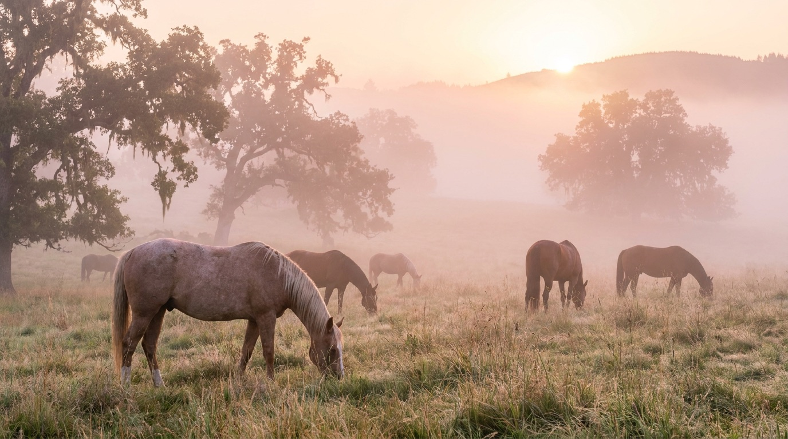

July 15, 2026
Douglas County Real Estate Market Update: Summer 2026
What rural buyers and sellers need to know about the Umpqua Valley market right now — inventory, pricing, and where the opportunities are.
Read →What's actually happening in the Umpqua Valley market — plus the tactics, checklists, and stories you only get from an agent who lives this.
July 15, 2026
What rural buyers and sellers need to know about the Umpqua Valley market right now — inventory, pricing, and where the opportunities are.
Read →
June 20, 2026
Water, access, zoning, septic, and boundaries — the five checks that separate dream properties from expensive lessons.
Read →
May 28, 2026
What a competitor looks for in footing, dimensions, and drainage — from someone who runs cans on her own ground.
Read →
May 10, 2026
Oakland, Elkton, Glide, Myrtle Creek and more — an honest local matchmaking guide to the county's communities.
Read →
April 22, 2026
Premiums, flood insurance, bank stability, and the honest economics of owning water in Douglas County.
Read →
April 5, 2026
Water records, deferral checkups, fence fixes, and the long-lead prep that adds real money to ranch sales.
Read →
March 18, 2026
What Bay Area and SoCal equity actually buys in Douglas County, and the honest adjustments to expect in year one.
Read →
February 10, 2026
Firewood, generators, frozen pipes, mud management, and the November-to-March rhythm of Douglas County acreage.
Read →
January 20, 2026
Habitat, water, access, pressure, LOP eligibility, and public adjacency — how to evaluate recreational ground like it's your job.
Read →
December 8, 2025
Small districts, charter options, 4-H and FFA culture — how school choices shape where rural families buy.
Read →
November 15, 2025
Kimmy's story — coast kid to Douglas County horsewoman, and why selling the rural life you actually live changes everything.
Read →
October 20, 2025
Feasibility contingencies, seller terms, price versus certainty, and the negotiation patterns unique to rural dirt.
Read →Whether you're buying your first five acres or selling the ranch that raised you — call, text, or email. Kimmy answers.
541-643-9509